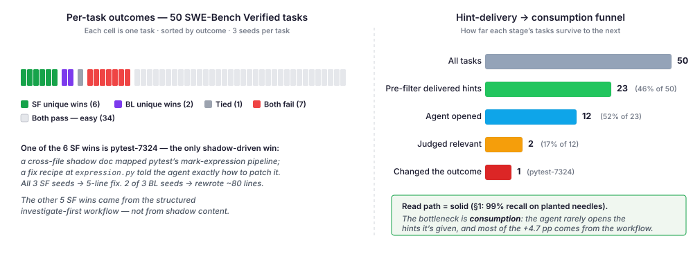
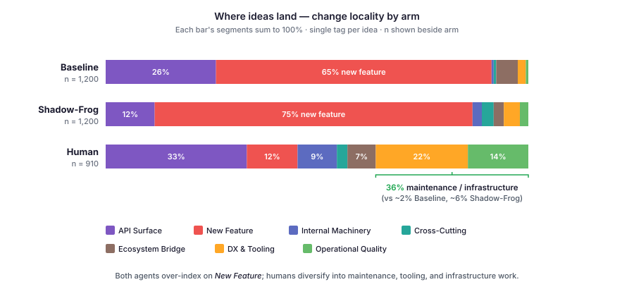

Figure 2 | Dream loop

Figure 2 — The discovery loop. Imagine a task, execute on a dedicated git branch, distill into a discovery, merge into the shadow. Inset: later dreams branch from earlier ones, inheriting both code and shadow.
.shadow/; cross-cutting discoveries live in .shadow/_cross/ and anchor to specific file::symbol locations on both sides.

